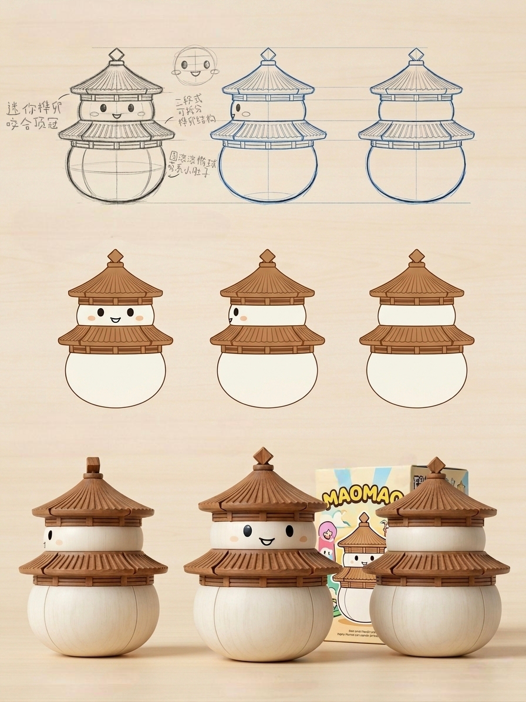

以古建筑八大派系为灵感，我们打造了一系列融合传统与现代的文创产品。 通过数字化技术与传统工艺的结合，让古老的建筑文化焕发新的活力。
IP主图展现了我们的核心形象，融合了八大派系的建筑元素， 象征着传统文化的传承与创新。
IP 3视图全方位展示了我们的设计理念， 从不同角度呈现古建筑的美学价值。
IP文创产品系列包括文具、服饰、家居用品等， 将古建筑元素融入现代生活，让文化触手可及。
每一件产品都承载着对传统文化的敬畏与热爱， 希望通过这些文创作品，让更多人了解和喜爱中国传统建筑文化。